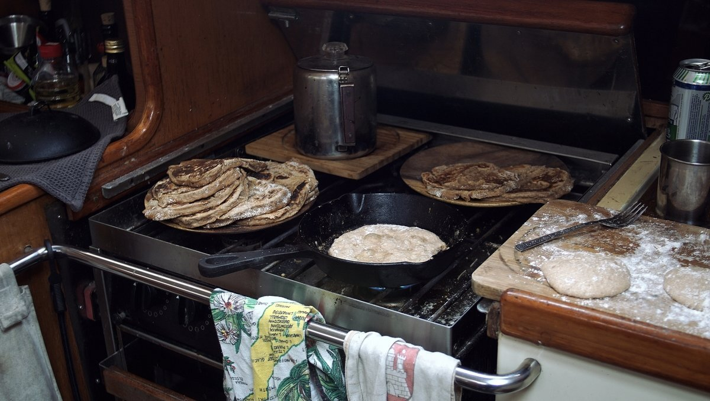

galley
Our galley is small, but has enough room for two people to cook. We have a 3-burner gimballed stove, equipped with a large oven. Since Pino has no refrigeration, we go out shopping for fresh food almost everyday.
Our sink is equipped with a brass fynspray hand pump.